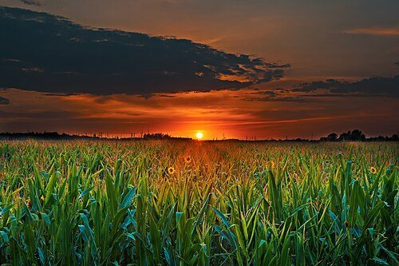

店のこと
映写機の部位の配置図
お店の詳しい情報は準備中です。ここでは、制作側が考えたデザインの考え方を紹介します。
制作側の連想
番号は、部位の番号
ホームの図にある1〜6の番号は、それぞれ映写機の部位の名前に対応します。制作側の連想で、お店の理念・由来とは無関係です。実際の製品の仕様を示すものではありません。
1送りリール
フィルムを巻いた状態で取りつける、上側の大きな丸い枠です。
2巻き取りリール
映し終えたフィルムを受けとって巻いていく、もうひとつの丸い枠。
3ランプハウス
光のもとになる電球を収めた、側面に溝のある箱の部分です。
4フィルムゲート
フィルムが一コマずつ通る、光の通り道にある小さな窓。
5投映レンズ
光を集めて前へ送り出す、筒の先についた円いガラスです。
6台脚
機械ぜんたいを下から支える、いちばん下の台と脚の部分。
写真(イメージ)
写真(イメージ)




写真はイメージです。お店のものではありません。